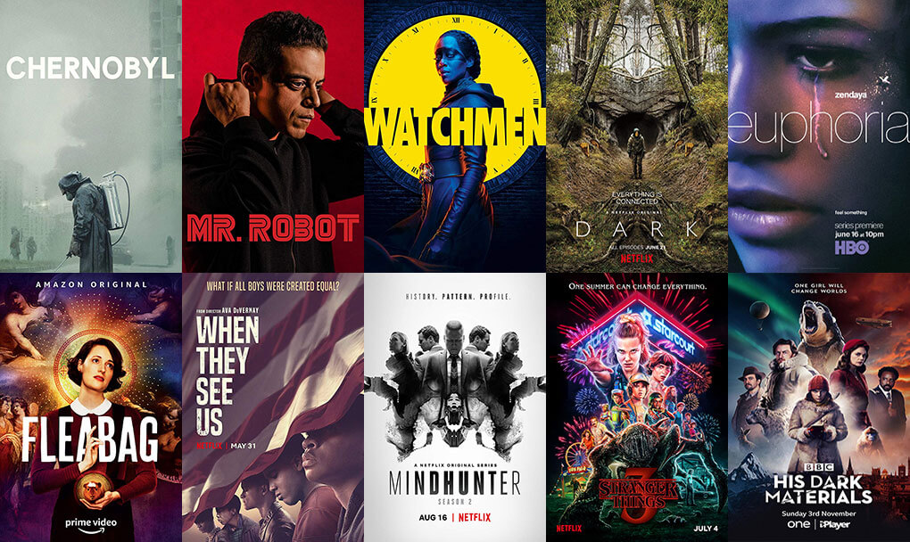

Neste site serão apresentados algumas séries e suas respectivas informações, que com base na minha opinião são ótimas séries para aqueles que procuram recomendações.

Um grupo de amigos se envolve em uma série de eventos sobrenaturais na pacata cidade de Hawkins. Eles enfrentam criaturas monstruosas, agências secretas do governo e se aventuram em dimensões paralelas.

Joel, um sobrevivente duro e cínico, e a jovem e impetuosa Ellie se conectam pela dificuldade do mundo em que vivem. Juntos, eles enfrentam circunstâncias brutais e monstros impiedosos durante uma difícil jornada pelos EUA após um surto apocalíptico.

The Last of Us é uma franquia de jogos eletrônicos de ação-aventura e survival horror exclusiva da PlayStation, criada por Neil Druckmann. A franquia é situada em um mundo pós-apocalíptico, com seres humanos hostis e criaturas canibais infectadas por uma mutação do fungo cordyceps.

A Terra é habitada por super-heróis que são um inspiração para a humanidade. Porém, esses protetores têm um lado sinistro que a maioria das pessoas desconhece. Se eles usam seus poderes para o mal, Hughie, Billy e o resto do time devem detê-los.

Quase 100 anos após um apocalipse nuclear devastar a Terra, 100 sobreviventes de uma estação espacial voltam para avaliar as condições do planeta.